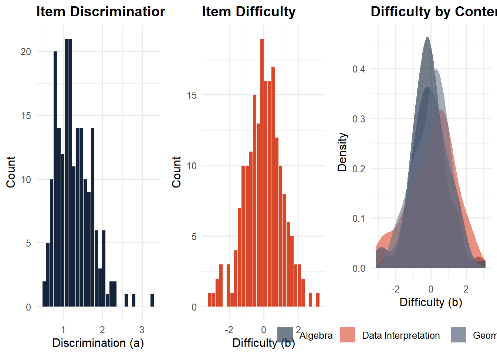
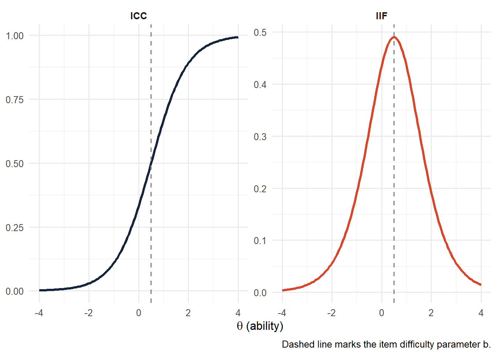
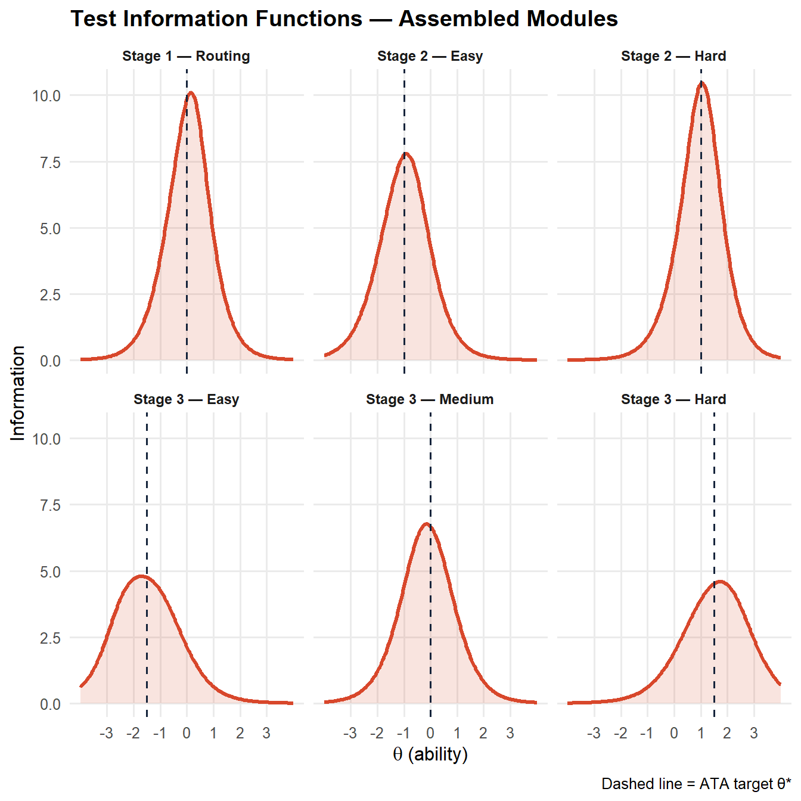
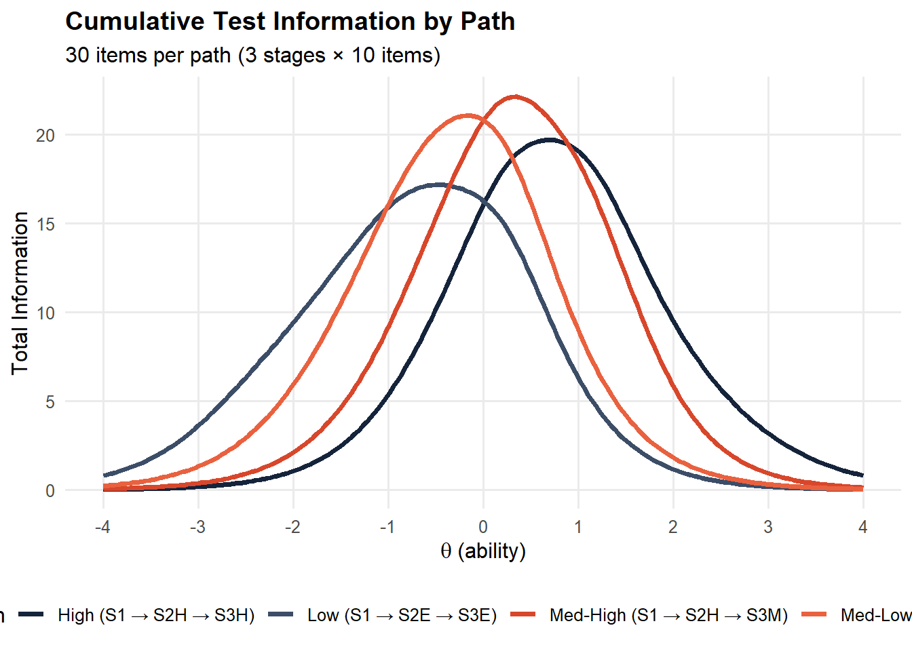
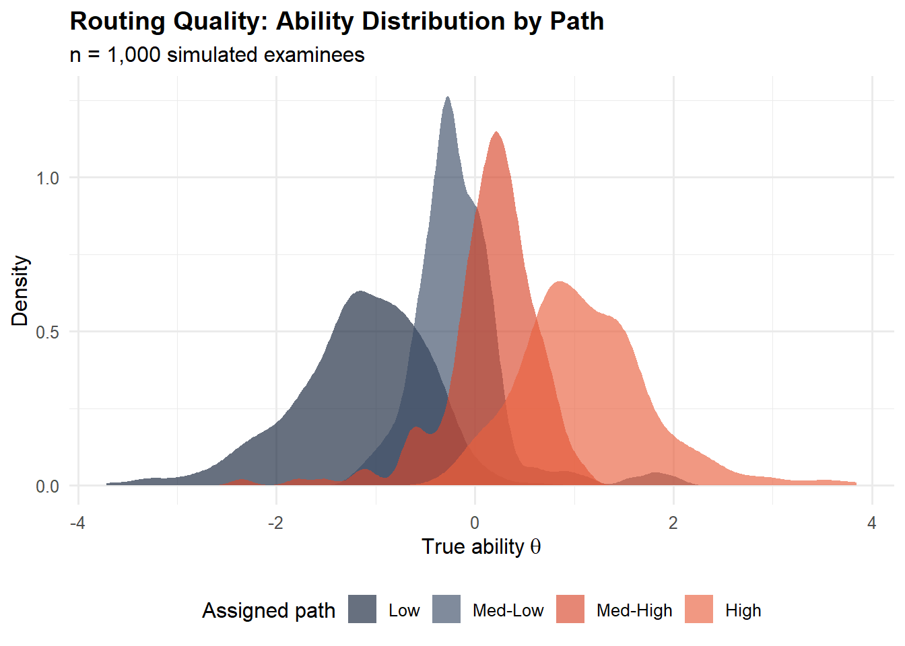

flowchart LR
S1["**Stage 1**\nRouting Module\n10 items\nθ target: 0"]
S2E["**Stage 2 — Easy**\n10 items\nθ target: −1.0"]
S2H["**Stage 2 — Hard**\n10 items\nθ target: +1.0"]
S3E["**Stage 3 — Easy**\n10 items\nθ target: −1.5"]
S3M["**Stage 3 — Medium**\n10 items\nθ target: 0.0"]
S3H["**Stage 3 — Hard**\n10 items\nθ target: +1.5"]
S1 -->|low score| S2E
S1 -->|high score| S2H
S2E -->|low score| S3E
S2E -->|high score| S3M
S2H -->|low score| S3M
S2H -->|high score| S3H
style S1 fill:#15243B,color:#F4F1E9,stroke:#15243B
style S2E fill:#3C4D67,color:#F4F1E9,stroke:#3C4D67
style S2H fill:#3C4D67,color:#F4F1E9,stroke:#3C4D67
style S3E fill:#D8472B,color:#F4F1E9,stroke:#D8472B
style S3M fill:#D8472B,color:#F4F1E9,stroke:#D8472B
style S3H fill:#D8472B,color:#F4F1E9,stroke:#D8472B
Multistage Testing and Automated Test Assembly in R
psychometrics
IRT
MST
R
test-design
A practical walkthrough of MST panel design theory and how to implement automated test assembly as a constrained optimisation problem using integer linear programming.
1 Why Multistage Testing?
Large-scale assessment has long operated at the tension between two competing ideals: the efficiency of adaptive measurement and the practicality of fixed-form delivery. Computerised Adaptive Testing (CAT) resolves this tension elegantly in theory, selecting each item individually based on the examinee’s evolving ability estimate. In practice, CAT faces real constraints:
- Examinees cannot review or revise earlier responses
- Content balance is difficult to guarantee item-by-item
- Item exposure and security are hard to control in high-stakes contexts
- Programme managers often need to pre-approve assembled tests
Multistage Testing (MST) offers a middle path. Instead of selecting items one at a time, MST selects pre-assembled modules of items. After each stage, a routing decision sends the examinee to an easier or harder module in the next stage. The result is a test that is adaptive at the module level, predictable at the content level, and reviewable by examinees within each module.
MST is now the operational model behind major assessments including the GRE, and is gaining traction in national qualification systems and language certification programmes.
2 MST Panel Architecture
2.1 The building blocks
An MST panel is defined by three elements:
| Element | Definition |
|---|---|
| Panel | One complete form: a set of modules spanning all stages |
| Stage | A testing block within the panel |
| Module | A fixed set of items within a stage; the atomic unit of assembly |
A testlet path is the sequence of modules an examinee traverses. In a 1–2–3 design, there is one routing module in Stage 1, two in Stage 2, and three in Stage 3, yielding four distinct paths:
This panel requires 6 modules and produces 4 distinct test paths, each 30 items long. Low-ability examinees take the path E → E → E; high-ability examinees follow H → H → H.
2.2 IRT foundation
Throughout this post, items follow the 2PL model:
\[ P(\theta) = \frac{1}{1 + e^{-a(\theta - b)}} \]
where \(a\) is the discrimination parameter and \(b\) is the difficulty (location) parameter. The item information function is:
\[ I_i(\theta) = a_i^2 \cdot P_i(\theta) \cdot [1 - P_i(\theta)] \]
and the test information function for a module \(M\) is:
\[ I_M(\theta) = \sum_{i \in M} I_i(\theta) \]
High \(I_M(\theta^*)\) near the target ability \(\theta^*\) means the module is well-targeted and will produce low measurement error for examinees in that ability range.
3 Automated Test Assembly as Optimisation
Selecting items by hand to satisfy both statistical and content constraints is intractable beyond a few dozen items. Automated Test Assembly (ATA) formalises the problem as a Mixed Integer Linear Programme (MILP).
3.1 The MILP formulation
Let \(x_i \in \{0, 1\}\) be a binary decision variable: 1 if item \(i\) is selected for the module, 0 otherwise.
Objective — maximise total information at the module’s target ability \(\theta^*\):
\[ \text{maximise} \quad \sum_{i=1}^{N} I_i(\theta^*) \cdot x_i \]
Constraints:
\[ \sum_{i=1}^{N} x_i = n \quad \text{(module length)} \]
\[ \ell_k \leq \sum_{i \in C_k} x_i \leq u_k \quad \forall k \quad \text{(content balance)} \]
\[ x_i = 0 \quad \forall i \in \mathcal{U} \quad \text{(used items unavailable)} \]
\[ x_i \in \{0, 1\} \]
where \(C_k\) is the set of items belonging to content category \(k\), \([\ell_k, u_k]\) are the lower and upper bounds on items from that category, and \(\mathcal{U}\) is the set of items already assigned to earlier modules.
We assemble modules sequentially: after each module is solved, selected items are added to \(\mathcal{U}\) and become unavailable for subsequent modules. This is a greedy heuristic; simultaneous assembly (solving all modules in one large LP) is theoretically superior but more complex — we note this in the discussion.
4 Implementation in R
4.1 Packages
library(tidyverse) # data wrangling and visualisation
library(lpSolve) # integer linear programming
library(scales) # axis formatting in ggplot4.2 Generating an item bank
We simulate a bank of 200 items with 2PL parameters and four content categories. In practice these would come from your calibration software (flexMIRT, Winsteps, Mplus, etc.).
set.seed(2025)
N <- 200
item_bank <- tibble(
item_id = sprintf("I%03d", 1:N),
a = rlnorm(N, meanlog = log(1.2), sdlog = 0.35),
b = rnorm(N, mean = 0, sd = 1.1),
content = sample(
c("Algebra", "Geometry", "Statistics", "Data Interpretation"),
N, replace = TRUE, prob = c(.30, .30, .20, .20)
)
)
# Quick summary
item_bank |>
summarise(
n_items = n(),
mean_a = round(mean(a), 3),
sd_a = round(sd(a), 3),
mean_b = round(mean(b), 3),
sd_b = round(sd(b), 3)
)| n_items | mean_a | sd_a | mean_b | sd_b |
|---|---|---|---|---|
| 200 | 1.274 | 0.45 | -0.027 | 1.085 |
p1 <- ggplot(item_bank, aes(x = a)) +
geom_histogram(fill = "#15243B", colour = "#F4F1E9", bins = 30, linewidth = .3) +
labs(x = "Discrimination (a)", y = "Count", title = "Item Discrimination") +
theme_minimal(base_size = 12) +
theme(plot.title = element_text(face = "bold"))
p2 <- ggplot(item_bank, aes(x = b)) +
geom_histogram(fill = "#D8472B", colour = "#F4F1E9", bins = 30, linewidth = .3) +
labs(x = "Difficulty (b)", y = "Count", title = "Item Difficulty") +
theme_minimal(base_size = 12) +
theme(plot.title = element_text(face = "bold"))
p3 <- ggplot(item_bank, aes(x = b, fill = content)) +
geom_density(alpha = .6, colour = NA) +
scale_fill_manual(values = c("#15243B","#D8472B","#3C4D67","#6A7589")) +
labs(x = "Difficulty (b)", y = "Density",
title = "Difficulty by Content", fill = NULL) +
theme_minimal(base_size = 12) +
theme(plot.title = element_text(face = "bold"),
legend.position = "bottom")
cowplot::plot_grid(p1, p2, p3, ncol = 3)
Note: Add
cowplotto your packages (library(cowplot)) for the side-by-side layout above. It is not required for the ATA itself.
4.3 IRT information functions
# 2PL item information at a single theta
item_info_2pl <- function(a, b, theta) {
P <- 1 / (1 + exp(-a * (theta - b)))
a^2 * P * (1 - P)
}
# Test information for a set of items at a vector of thetas
test_info <- function(items_df, theta_vec) {
map_dbl(theta_vec, function(th) {
sum(item_info_2pl(items_df$a, items_df$b, th))
})
}Let us verify the information function behaves as expected for a sample item:
theta_grid <- seq(-4, 4, by = 0.05)
sample_item <- tibble(a = 1.4, b = 0.5)
icc_vals <- 1 / (1 + exp(-sample_item$a * (theta_grid - sample_item$b)))
info_vals <- item_info_2pl(sample_item$a, sample_item$b, theta_grid)
tibble(theta = theta_grid, ICC = icc_vals, IIF = info_vals) |>
pivot_longer(-theta, names_to = "Function", values_to = "Value") |>
ggplot(aes(x = theta, y = Value, colour = Function)) +
geom_line(linewidth = 1.2) +
geom_vline(xintercept = sample_item$b, linetype = "dashed", colour = "grey50") +
scale_colour_manual(values = c(ICC = "#15243B", IIF = "#D8472B")) +
facet_wrap(~Function, scales = "free_y") +
labs(x = expression(theta ~ "(ability)"), y = NULL,
caption = "Dashed line marks the item difficulty parameter b.") +
theme_minimal(base_size = 12) +
theme(legend.position = "none",
strip.text = element_text(face = "bold"))
4.4 The ATA solver
The core function below wraps lpSolve::lp() to solve the MILP for one module. Key inputs are the item bank, a logical vector of available items, a target \(\theta^*\), a desired module length, and a named list of content constraints.
assemble_module <- function(bank,
available,
target_theta,
n_items,
content_specs) {
N <- nrow(bank)
# --- Objective: maximise information at target_theta ---
# lpSolve minimises, so we negate
obj <- -map_dbl(seq_len(N), function(i) {
if (!available[i]) return(0)
item_info_2pl(bank$a[i], bank$b[i], target_theta)
})
# --- Constraint matrix ---
con_list <- list()
dir_list <- character(0)
rhs_list <- numeric(0)
# 1. Exact module length
row_total <- as.numeric(available)
con_list[[1]] <- row_total
dir_list <- c(dir_list, "=")
rhs_list <- c(rhs_list, n_items)
# 2. Content balance
for (nm in names(content_specs)) {
in_category <- as.numeric(bank$content == nm & available)
spec <- content_specs[[nm]]
if (!is.null(spec$min)) {
con_list <- c(con_list, list(in_category))
dir_list <- c(dir_list, ">=")
rhs_list <- c(rhs_list, spec$min)
}
if (!is.null(spec$max)) {
con_list <- c(con_list, list(in_category))
dir_list <- c(dir_list, "<=")
rhs_list <- c(rhs_list, spec$max)
}
}
# 3. Force unavailable items to 0
for (i in which(!available)) {
row_i <- rep(0, N); row_i[i] <- 1
con_list <- c(con_list, list(row_i))
dir_list <- c(dir_list, "=")
rhs_list <- c(rhs_list, 0)
}
con_mat <- do.call(rbind, con_list)
# --- Solve ---
result <- lp(
direction = "min",
objective.in = obj,
const.mat = con_mat,
const.dir = dir_list,
const.rhs = rhs_list,
all.bin = TRUE
)
if (result$status != 0) {
warning(sprintf("LP solver returned status %d — no optimal solution found.", result$status))
return(rep(FALSE, N))
}
as.logical(round(result$solution) == 1)
}5 Assembling the Panel
5.1 Content specifications
Each module must satisfy these constraints:
n_per_module <- 10
content_specs <- list(
"Algebra" = list(min = 2, max = 4),
"Geometry" = list(min = 2, max = 4),
"Statistics" = list(min = 1, max = 3),
"Data Interpretation"= list(min = 1, max = 3)
)5.2 Sequential assembly
We assemble Stage 1 first, then remove those items, assemble Stage 2 modules, remove their items, and finally assemble Stage 3 modules. This ensures no item appears in more than one module.
available <- rep(TRUE, nrow(item_bank))
modules <- list()
# Stage 1 — routing module, target theta = 0
modules$S1 <- assemble_module(item_bank, available, 0, n_per_module, content_specs)
available <- available & !modules$S1
cat("Stage 1 assembled:", sum(modules$S1), "items\n")Stage 1 assembled: 10 items# Stage 2 — Easy (target theta = -1.0)
modules$S2_Easy <- assemble_module(item_bank, available, -1.0, n_per_module, content_specs)
available <- available & !modules$S2_Easy
cat("Stage 2 Easy assembled:", sum(modules$S2_Easy), "items\n")Stage 2 Easy assembled: 10 items# Stage 2 — Hard (target theta = +1.0)
modules$S2_Hard <- assemble_module(item_bank, available, 1.0, n_per_module, content_specs)
available <- available & !modules$S2_Hard
cat("Stage 2 Hard assembled:", sum(modules$S2_Hard), "items\n")Stage 2 Hard assembled: 10 items# Stage 3 — Easy (target theta = -1.5)
modules$S3_Easy <- assemble_module(item_bank, available, -1.5, n_per_module, content_specs)
available <- available & !modules$S3_Easy
cat("Stage 3 Easy assembled:", sum(modules$S3_Easy), "items\n")Stage 3 Easy assembled: 10 items# Stage 3 — Medium (target theta = 0.0)
modules$S3_Med <- assemble_module(item_bank, available, 0.0, n_per_module, content_specs)
available <- available & !modules$S3_Med
cat("Stage 3 Medium assembled:", sum(modules$S3_Med), "items\n")Stage 3 Medium assembled: 10 items# Stage 3 — Hard (target theta = +1.5)
modules$S3_Hard <- assemble_module(item_bank, available, 1.5, n_per_module, content_specs)
available <- available & !modules$S3_Hard
cat("Stage 3 Hard assembled:", sum(modules$S3_Hard), "items\n")Stage 3 Hard assembled: 10 items5.3 Module summary
module_labels <- c(
S1 = "Stage 1 — Routing",
S2_Easy = "Stage 2 — Easy",
S2_Hard = "Stage 2 — Hard",
S3_Easy = "Stage 3 — Easy",
S3_Med = "Stage 3 — Medium",
S3_Hard = "Stage 3 — Hard"
)
target_thetas <- c(
S1 = 0, S2_Easy = -1.0, S2_Hard = 1.0,
S3_Easy = -1.5, S3_Med = 0.0, S3_Hard = 1.5
)
map_dfr(names(modules), function(nm) {
items <- item_bank[modules[[nm]], ]
tibble(
Module = module_labels[nm],
`Target θ` = target_thetas[nm],
`n items` = nrow(items),
`Mean a` = round(mean(items$a), 3),
`Mean b` = round(mean(items$b), 3),
Algebra = sum(items$content == "Algebra"),
Geometry = sum(items$content == "Geometry"),
Statistics = sum(items$content == "Statistics"),
`Data Interp`= sum(items$content == "Data Interpretation")
)
})| Module | Target θ | n items | Mean a | Mean b | Algebra | Geometry | Statistics | Data Interp |
|---|---|---|---|---|---|---|---|---|
| Stage 1 — Routing | 0.0 | 10 | 2.035 | 0.048 | 4 | 4 | 1 | 1 |
| Stage 2 — Easy | -1.0 | 10 | 1.833 | -0.988 | 3 | 4 | 1 | 2 |
| Stage 2 — Hard | 1.0 | 10 | 2.059 | 0.940 | 2 | 4 | 1 | 3 |
| Stage 3 — Easy | -1.5 | 10 | 1.530 | -1.482 | 3 | 3 | 3 | 1 |
| Stage 3 — Medium | 0.0 | 10 | 1.695 | -0.127 | 2 | 4 | 3 | 1 |
| Stage 3 — Hard | 1.5 | 10 | 1.452 | 1.567 | 2 | 3 | 3 | 2 |
6 Visualising the Results
6.1 Module information functions
The plot below shows the test information function for each assembled module alongside the target ability \(\theta^*\) (dashed vertical line). Well-assembled modules peak near their target.
theta_grid <- seq(-4, 4, length.out = 200)
tif_data <- map_dfr(names(modules), function(nm) {
items <- item_bank[modules[[nm]], ]
tibble(
theta = theta_grid,
info = test_info(items, theta_grid),
module = module_labels[nm],
target = target_thetas[nm]
)
})
tif_data |>
mutate(module = factor(module, levels = module_labels)) |>
ggplot(aes(x = theta, y = info)) +
geom_area(alpha = .15, fill = "#D8472B") +
geom_line(colour = "#D8472B", linewidth = 1.1) +
geom_vline(aes(xintercept = target), linetype = "dashed",
colour = "#15243B", linewidth = .7) +
facet_wrap(~module, ncol = 3) +
labs(
x = expression(theta ~ "(ability)"),
y = "Information",
title = "Test Information Functions — Assembled Modules",
caption = "Dashed line = ATA target θ*"
) +
scale_x_continuous(breaks = -3:3) +
theme_minimal(base_size = 12) +
theme(
strip.text = element_text(face = "bold", size = 9),
plot.title = element_text(face = "bold"),
panel.grid.minor = element_blank()
)
6.2 Path information functions
An examinee’s total measurement precision depends on the combination of modules they traverse. Below we plot the cumulative information for all four testlet paths.
paths <- list(
"Low (S1 → S2E → S3E)" = c("S1","S2_Easy","S3_Easy"),
"Med-Low (S1 → S2E → S3M)" = c("S1","S2_Easy","S3_Med"),
"Med-High (S1 → S2H → S3M)" = c("S1","S2_Hard","S3_Med"),
"High (S1 → S2H → S3H)" = c("S1","S2_Hard","S3_Hard")
)
path_colours <- c("#15243B","#3C4D67","#D8472B","#E9613F")
path_tif <- map_dfr(names(paths), function(path_name) {
mods <- paths[[path_name]]
all_items <- bind_rows(lapply(mods, function(m) item_bank[modules[[m]], ]))
tibble(
theta = theta_grid,
info = test_info(all_items, theta_grid),
path = path_name
)
})
ggplot(path_tif, aes(x = theta, y = info, colour = path)) +
geom_line(linewidth = 1.3) +
scale_colour_manual(values = path_colours) +
labs(
x = expression(theta ~ "(ability)"),
y = "Total Information",
colour = "Testlet path",
title = "Cumulative Test Information by Path",
subtitle = "30 items per path (3 stages × 10 items)"
) +
scale_x_continuous(breaks = -4:4) +
theme_minimal(base_size = 12) +
theme(
legend.position = "bottom",
plot.title = element_text(face = "bold"),
panel.grid.minor = element_blank()
)
7 Routing Logic
Routing decisions are made at the end of each stage based on the examinee’s estimated ability \(\hat{\theta}\) (or, in simpler implementations, their observed proportion correct).
A practical approach uses fixed cut scores on \(\hat{\theta}\) derived from simulation studies or from the module difficulty parameters:
# Routing rules based on theta estimate after each stage
route_stage1 <- function(theta_hat) {
if_else(theta_hat >= 0, "S2_Hard", "S2_Easy")
}
route_stage2 <- function(theta_hat, came_from) {
case_when(
came_from == "S2_Easy" & theta_hat >= -0.5 ~ "S3_Med",
came_from == "S2_Easy" ~ "S3_Easy",
came_from == "S2_Hard" & theta_hat >= 0.5 ~ "S3_Hard",
TRUE ~ "S3_Med"
)
}
# Simulate 1 000 examinees and track their paths
simulate_examinees <- function(n = 1000) {
theta_true <- rnorm(n, mean = 0, sd = 1.1)
map_dfr(theta_true, function(th) {
# After Stage 1: estimate theta with measurement error
th_after_s1 <- th + rnorm(1, 0, sqrt(1 / max(1, test_info(
item_bank[modules$S1, ], th
))))
stage2 <- route_stage1(th_after_s1)
th_after_s2 <- th + rnorm(1, 0, sqrt(1 / max(1, test_info(
item_bank[modules[[stage2]], ], th
))))
stage3 <- route_stage2(th_after_s2, stage2)
tibble(
theta_true = th,
stage2 = stage2,
stage3 = stage3,
path = paste0("S1 \u2192 ", stage2, " \u2192 ", stage3)
)
})
}
set.seed(42)
sim_results <- simulate_examinees(1000)
sim_results |>
count(stage2, stage3) |>
mutate(
path = paste0("S2: ", stage2, " → S3: ", stage3),
proportion = scales::percent(n / sum(n), accuracy = 0.1)
) |>
select(path, n, proportion)| path | n | proportion |
|---|---|---|
| S2: S2_Easy → S3: S3_Easy | 328 | 32.8% |
| S2: S2_Easy → S3: S3_Med | 176 | 17.6% |
| S2: S2_Hard → S3: S3_Hard | 320 | 32.0% |
| S2: S2_Hard → S3: S3_Med | 176 | 17.6% |
sim_results |>
mutate(
path_label = case_when(
stage2 == "S2_Easy" & stage3 == "S3_Easy" ~ "Low",
stage2 == "S2_Easy" & stage3 == "S3_Med" ~ "Med-Low",
stage2 == "S2_Hard" & stage3 == "S3_Med" ~ "Med-High",
stage2 == "S2_Hard" & stage3 == "S3_Hard" ~ "High"
),
path_label = factor(path_label, levels = c("Low","Med-Low","Med-High","High"))
) |>
ggplot(aes(x = theta_true, fill = path_label)) +
geom_density(alpha = .65, colour = NA) +
scale_fill_manual(values = c("#15243B","#3C4D67","#D8472B","#E9613F")) +
labs(
x = expression("True ability" ~ theta),
y = "Density",
fill = "Assigned path",
title = "Routing Quality: Ability Distribution by Path",
subtitle = "n = 1,000 simulated examinees"
) +
theme_minimal(base_size = 12) +
theme(
legend.position = "bottom",
plot.title = element_text(face = "bold")
)
8 Discussion and Practical Considerations
8.1 Sequential vs. simultaneous assembly
The sequential approach used here is straightforward but suboptimal: early modules get first pick of the best items. Simultaneous assembly solves all modules in a single MILP, adding cross-module constraints (\(\sum_{m} x_{im} \leq 1\) for each item \(i\)).
For production work, consider:
- The
TestDesignpackage (Choe et al., 2020) implements full simultaneous ATA with a rich constraint interface designed specifically for MST - The
atapackage provides a cleaner DSL for writing ATA problems - Commercial tools such as CASIO (Automated Test Assembly) and Lertap have GUI interfaces for non-programmers
8.2 Routing cut scores
The fixed cut scores above are naive starting points. In practice, cut scores are:
- Derived from simulation studies maximising measurement precision across the ability range
- Validated against real examinee data in pilot administrations
- Calibrated to balance path utilisation (avoiding over-routing to one branch)
8.3 Local item dependency
Items within a module may violate the local independence assumption if they share a common stimulus (e.g., a reading passage). Bundles of locally-dependent items (testlets) should be treated as single units in the ATA formulation, with constraints operating at the testlet level. Ignoring local dependency inflates apparent precision, particularly in stage-level theta estimation.
8.4 Exposure control
Sequential assembly already provides a degree of natural exposure control (each item appears in at most one module per panel). In operational programmes with multiple panels, additional constraints (maximum exposure rate \(r_{max}\) per item across panels) should be added to the MILP.
9 Further Reading
- Yan, D., von Davier, A. A., & Lewis, C. (Eds.). (2014). Computerized Multistage Testing: Theory and Applications. CRC Press.
- van der Linden, W. J. (2005). Linear Models for Optimal Test Design. Springer.
- Choe, E. M., Kern, J. L., & Chang, H.-H. (2018). Optimizing the use of response time information in adaptive testing. Applied Psychological Measurement, 42(8), 600–613.
- Luecht, R. M., & Nungester, R. J. (1998). Some practical examples of computer-adaptive sequential testing. Journal of Educational Measurement, 35(3), 229–249.
Code and data for this post are available on GitHub.